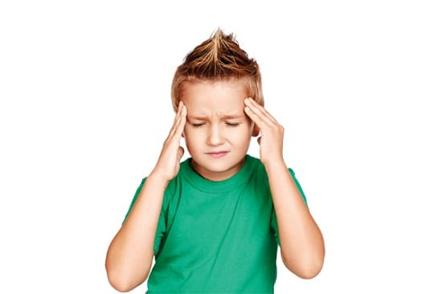
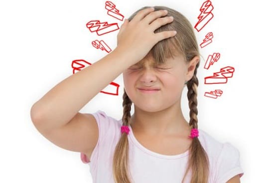
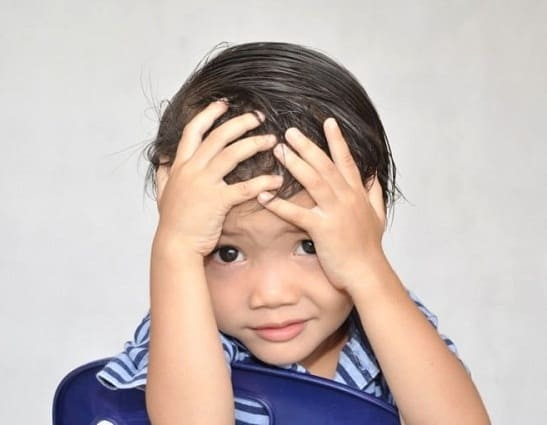

Головные боли часто сопровождают различные болезни, такие как лихорадка, грипп и инфекции пазух. Но сами по себе, при отсутствии проявлений какого-либо заболевания, головные боли встречаются у детей крайне редко. По мере роста дети начинают время от времени испытывать их в результате жизненных стрессов. Ниже дано наше описание головных болей у детей всех возрастов и советы, как с ними справиться.
ПРИЧИНЫ
Некоторые боли происходят просто сами по себе, а некоторые являются частью общего заболевания. Вот перечень причин, который поможет вам выбрать наилучший образ действий.
Инфекционные причины головных болей:
• ОРЗ и грипп. Головная боль является обычной составляющей этих распространенных болезней;
• инфекции придаточных пазух. Головные боли в области глаз и лба могут быть проявлением инфекции носовых пазух;
• лихорадка. Лихорадка практически всегда вызывает головную боль. Фактически первой жалобой вашего ребенка, когда у него поднимается температура, может стать жалоба на головную боль;
• стрептококковая ангина. Если у вашего ребенка ангина, лихорадка головная боль, это может быть стрептококковая ангина;
• менингит. Сильная головная боль, сопровождающаяся ригидностью шеи, лихорадкой, рвотой и светобоязнью, может означать менингит.
Неинфекционные причины:
• обычные головные боли. Когда ребенок входит в пубертатный период, раз в пару месяцев у него мог быть головные боли из-за обычных жизненных стрессов. Это не повод для переживаний;
• нарушения зрения. Развитие нарушений зрения часто сопровождается головными болями. Это первое, что должны проверить вы и ваш врач, если у ребенка повторяются головные боли. Ребенок не всегда замечает, что плохо видит, и ему приходится напрягать зрение;
• высокое артериальное давление. Это редкий случай, но его легко проверить при посещении врача;
• пониженное содержание сахара в крови. Если головные боли у вашего ребенка появляются, когда он голоден или перед временем обычного приема пищи, причина может крыться в снижении уровня сахара в крови. В общем-то, с этим не обязательно идти к врачу. Вам просто надо следить за здоровым питанием ребенка;
• мигрени. Это беспокоящее состояние включает сильные, пульсирующие головные боли, которые длятся часами или целый день. Они часто сопровождаются тошнотой или появлением перед глазами черных точек.
• стресс. Так же, как и у взрослых, у детей старшего возраста и у подростков могут быть головные боли напряжения. Если они появляются часто и тяжело переносятся, попытайтесь уменьшить количество стрессов в жизни своего ребенка.

КОГДА БЕСПОКОИТЬСЯ И ЧТО ДЕЛАТЬ
Как правило, из-за обычных головных болей не стоит беспокоиться. Небольшой отдых в тихой комнате и обезболивающие лекарства (при необходимости) решают проблему. Тем не менее ниже приведены случаи, когда необходима консультация врача:
• симптомы менингита;
• сильная головная боль, какой раньше никогда не было;
• головные боли, сопровождающиеся другими неврологическими симптомами, такими как расплывчатое зрение, двоение в глазах, головокружение или мышечная слабость;
• сильная головная боль после травмы головы.
ЛЕЧЕНИЕ ХРОНИЧЕСКИХ ГОЛОВНЫХ БОЛЕЙ
Если у вашего ребенка постоянно возникают необоснованные головные боли, мы советуем сделать следующее:
• ведите дневник головных болей. Записывайте время дня, отношение к пище, интенсивность болей, что способствует облегчению, как ребенок при этом себя ведет;
• посетите врача. Проверка зрения, измерение артериального давления, анализ мочи и проверка физического состояния могут исключить любое очевидное заболевание;
• посетите окулиста. Окулист может определить более тонкие проблемы, которые мог не заметить педиатр;
• посетите мануального терапевта. Это может способствовать улучшению здоровья и коррекции шеи позвоночника, что, возможно, решит проблему;
• сделайте анализы на пищевые аллергии. У некоторых детей возможно возникновение головных болей из-за пищевых аллергий.

Здоровье ребенка от докторов Сирс / Сирс У. и др.